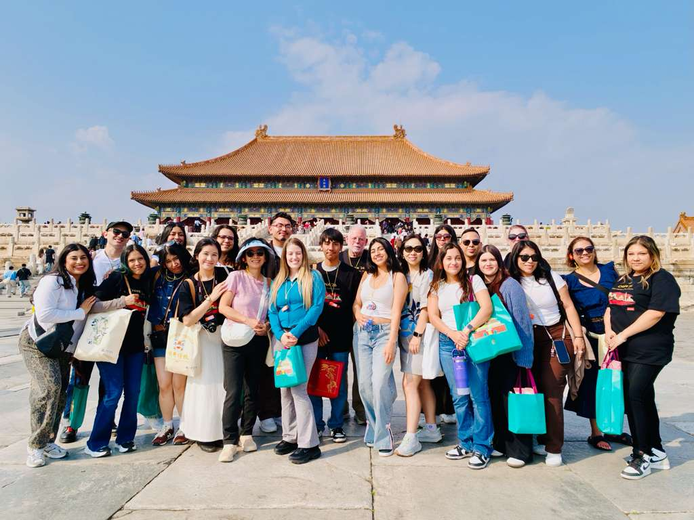
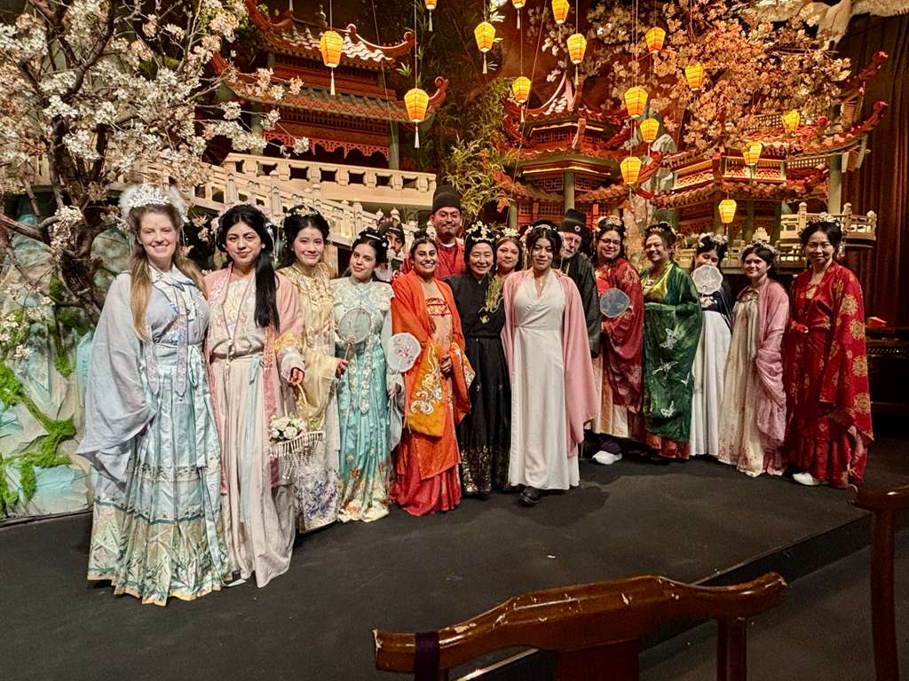

Travel Dates: Offered every Spring Break.
This interdisciplinary study abroad experience focuses on preventive health and healthcare services in contemporary China. The program includes site visits in Beijing and Shanghai, creating opportunities to engage with healthcare institutions, community organizations, and local professionals. It is open to all majors and aims to foster cross-disciplinary dialogue, global awareness, and applied learning in international health contexts.

Study Abroad Group in Beijing

Cultural Experience: Hanfu Performance